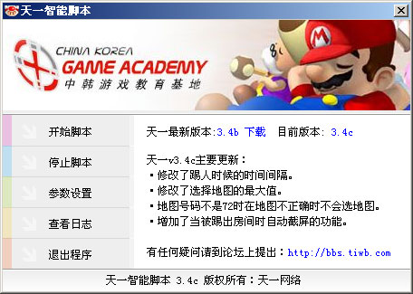
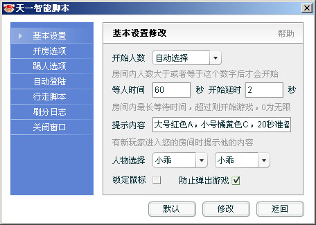

首先请下载天一智能脚本的最新版本，地址为 http://pp.tiwb.com/pp/download/setup.exe
下载完毕后，双击setup.exe文件进行安装，默认的安装目录是c:\Program Files\天一网络
天一为绿色软件，卸载时可以直接删除目录。
以下以3.4c版为例，目录中各个文件的功能如下：
tiwb.exe 这个是主程序。刷分用的。
keyhook.dll 这个是键盘监听程序，用做快捷键。可能会被一些杀毒软件当作木马
tiwblog.exe 这个是日志查看程序。会有专门的使用说明。
config.dat 这个是配置文件，里面保存有你的帐号和密码，是加密过的。但是如果在网吧使用，还是要小心。
log.txt 这个是刷分日志，格式很严格。主要是给日志查看程序用的。
安装后，程序会在桌面上建立“天一智能脚本”的图标。并且会自动运行程序。如果程序无法运行，请安装Flash 7插件。
天一智能脚本的主界面如下：

最上面是广告部分，下面是版权，点击可以直接打开天一网站。
左面是主要菜单，开始脚本和停止脚本的快捷键都是F10。注意快捷键在输入密码时不可用。如果这时想关闭脚本。则必须先按ALT+F4关闭程序，然后再按F10停止脚本。
右面是公告区。其中有天一最新版本和目前您使用的版本。以及最新版本的主要更新。如果有必要。您可以直接点击最新版本的下载链接来下载天一的最新版本。
注意：目前版本显示的是服务器根据您的课户端的数据计算得出的版本号。如果这个地方显示的不是您的实际版本号，说明您的程序是被别人修改过的或者中了病毒。这是建议您对机器查毒并从新下载软件。
点标题栏上的关闭按钮（最右上角的那个X）并不会关闭软件。而是将软件隐藏。如果要关闭软件，请点界面中的退出程序或者在任务栏（屏幕右下角）中找到小乖头像后点右键，在弹出菜单中选择退出程序。
参数设置部分：
点菜单中的参数设置，可以看到如下界面，如果您看到的不是这样的，说明您的Flash插件的版本不够。请到软件下载区中下载并安装Flash 7 AX 插件。

下面详细介绍设置中的每个部分对应的用途：
一、基本设置：
1.开始人数
此设置有4个选项，4人，6人，8人和自动选择，默认为自动选择。设置成自动选择后，开始人数会随您的房间号码变化。当房间号码小于50时，开始人数为8人，当房间号码在50-100之间时，开始人数为6人，当房间号码大于100时，开始人数为4人。2个人时不会开始游戏。
2.等人时间
等人时间是指从状态转换成在房间内后最长的等待时间。也就是说，如果在房间内等待超出了这个时间后还没有开始游戏的话（原因可能是人数不过或者正在踢人），就会强行开始游戏。默认是60秒。如果设置成0，脚本就会无限制地等下去。
3.开始延时
当有新玩家进入并且准备后，脚本会等待一下再开始游戏。原因是防止出现由于开始的太快而导致别人没来的及换色的问题。这个时间不宜设置过长，否则会造成丢房间或者别人由于您不开始游戏而走掉的问题。
4.提示内容
当有玩家进入时，打出的文字。由于有防30秒禁言机制，所以并不是每个进入的人都会提示。
5.人物选择
指定脚本使用的人物，如果人物不正确，脚本会自动选择正确的人物（在刚进入房间时）。此功能要求正常安装游戏，如果每次都在选择人物，请将它设置成“默认”。否则开始速度非常慢。
6.锁定鼠标
由于脚本是对屏幕上的特殊点进行取色判断，所以鼠标有时会严重影响脚本的正常运行。建议在长时间刷分时打开这个选项，这样在脚本运行时鼠标就会被固定在屏幕左上角，防止对脚本产生影响。
7.防止弹出游戏
打开这个选项后，可以避免QQ上的人发视频而让你的游戏最小化导致脚本无法正常运行。但是脚本运行时无法切换出去。
二、开房选项
1.房间名称
这个是开房间的名称，最长10位。房间名称前面会被自动加上"天一:"2字
2.房间密码
一般空着不填，如果填写，则会开有密码的房间。
3.房间号码
这个号码是告诉脚本仅开这个号码以内的房间，如果房间号码大于这个数字，脚本就会退出房间然后从新开。直到开到您设置的号码以前的房间。
4.开自由房
此选项在刷分时请不要选择，它用于在开单号时将开门个数设置成2来达到占房间的目的。
5.地图索引
这个数字代表开好房间后脚本会自动选择的地图序号。序号的计算方法是从最上面数第一个地图是0，然后依次类推。一般来说工厂01是72
6.开门数
取值范围是2-8。比如设置成开6个门，则脚本会自动关2个门。注意不要与开始人数冲突。
三、踢人选项
1.换色时间
这个是在踢人或者等人时的换色时间间隔，默认为2秒，如果设置成21秒，则会有请在10秒内准备的提示出现。挂机的人的任务栏上也会闪一下。这样别人就知道房主目前正在等待他们回应了。如果大于29秒，则会丢房间。
2.踢不准备的人
设置成0则为关闭次功能，否则在玩家进入后x秒后如果状态不是“准备”，则房主会发送强制退出请求。并且提示。后面是提示的内容，"%d"是玩家号码，可以不要此项。但是绝不可多于1个。否则程序会非法操作！以下相同。
3.踢单号
脚本通过每秒10次的对房间内人数判断来推断是否有单号进入。如果同时进入3个人，那么这3个人都会被认为是单号。
4.踢捣乱
游戏结束后，脚本会记录每个人的分数情况，如果发现某人杀人数不为0（房主除外），则判断其为捣乱，会发出强制退出请求。
四、自动登陆
1.选择分区
该设置有4个选项：不自动登陆，1区，2区和3区，默认为不自动登陆，如果要开启自动登陆功能，请选择您所在的分区。
2.服务器序号
服务器序号是知脚本登陆服务器的序号，与服务器前的序号并不对应，计算公式为：服务器序号-第一个服务器的序号。默认为39。即第3页第一个服务器。这个是根据2区定的，如果您不在2区，请自行更改。
3.服务器误差
这个是脚本在试图进入服务器时允许的误差范围，也就是登陆服务器的个数，比如设置成13，服务器序号设置成39，则如果脚本登陆到了52号服务器以后，则退出服务器重新选择。
4.玩家登陆
在这里填写要登陆的用户名和密码（用户名在左，密码在右）。您也可以只填写密码，这样就会使用上一次登陆的用户名登陆。
五、行走脚本
这里主要是控制游戏开始后大号和小号的行走路线。详细请看脚本编写教程。您也可以直接用别人写好的脚本。先复制脚本，然后按CTRL+V粘贴。
六、刷分日志
这里的选项控制脚本记录下哪些日志。为了日志分析器的正常工作。请选择所有项。
七、关闭窗口
这里列出了会被脚本自动关闭的窗口，每行一个标题。